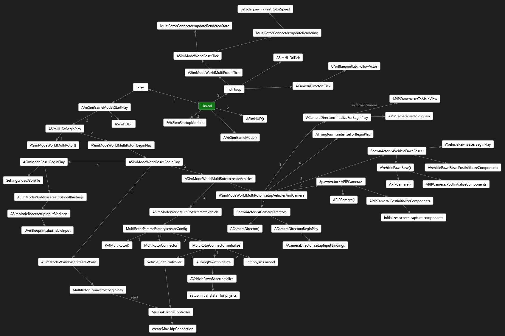

代码结构
AirLib
大部分代码位于 AirLib 库中。这是一个独立的库，您可以使用任何 C++11 编译器对其进行编译。
AirLib由以下组件构成：
- 物理引擎： 这是一个仅包含头文件的物理引擎。它的设计目标是速度快且易于扩展，以便实现不同的载具模型。
- 传感器模型： 这是气压计、IMU、GPS 和磁力计的仅头文件模型。
- 载具模型： 这是仅包含车辆配置和模型的头文件模型。目前，我们已实现了多旋翼飞行器的模型以及 X 配置中的 PX4 四旋翼飞行器的配置。MultiRotorParams.hpp 中定义了几种不同的多旋翼飞行器模型，其中也包括六旋翼飞行器。
- API 相关的文件： AirLib 的这一部分为我们的 API 提供抽象基类，并为特定载具平台（例如 MavLink）提供具体实现。它还包含 RPC 客户端和服务器的类。
除此之外，所有常用工具都定义在 common/ 子文件夹中。其中一个重要的文件是 AirSimSettings.hpp，如果需要在 settings.json 中添加任何新字段，则需要修改此文件。
Air 支持多旋翼飞行器的不同固件，例如其自身的 SimpleFlight、PX4 和 ArduPilot，与每个固件通信的文件都放置在 multirotor/firmwares 中的相应子文件夹中。
特定载具的 API 定义在 api/ 子文件夹中，同时定义的还有所需的结构体。AirLib/src/ 目录包含 .cpp 文件，其中实现了 .hpp 文件中定义的各种方法。例如，MultirotorApiBase.cpp 包含多旋翼飞行器 API 的基本实现，如有需要，也可以在特定的固件文件中对其进行重写。
Unreal/Plugins/AirSim
这是项目中唯一依赖于虚幻引擎的部分。我们将其隔离，以便也能像在 Unity 平台上那样，为其他平台实现模拟器。虚幻引擎代码利用了其基于 UObject 的类，包括蓝图。Source/ 文件夹包含 C++ 文件，而 Content/ 文件夹包含蓝图和资源文件。一些主要组件如下所述：
- SimMode_ 类: SimMode 类有助于实现多种不同的模式，例如纯计算机视觉模式，该模式下没有车辆，也没有针对特定车辆（目前包括汽车和多旋翼飞行器）的仿真。载具类位于
Vehicles/目录中。 - PawnSimApi: 这是所有载具棋子(Pawn)可视化的基类。每种载具都有自己的子棋子类（多旋翼飞行器 | 汽车 | 计算机视觉）。
- UnrealSensors: 包含距离传感器和激光雷达传感器的实现。
- WorldSimApi: 实现了大部分与环境和载具无关的 API
除此之外，PIPCamera 包含相机初始化代码，UnrealImageCapture 和 RenderRequest 包含图像渲染代码。AirBlueprintLib 包含许多用于与引擎交互的实用工具和封装方法。
MavLinkCom
这是 Chris Lovett 开发的库，它提供了用于与 MavLink 设备通信的 C++ 类。该库是独立的，可用于任何项目。更多信息请访问 MavLinkCom 。
示例程序
我们创建了一些示例程序来演示如何使用 API。请参阅 HelloDrone 和 DroneShell。DroneShell 演示了如何使用 UDP 连接到模拟器。该模拟器运行着一个服务器（类似于 DroneServer）。
PythonClient
PythonClient 包含 Python API 封装文件和演示其用法的示例程序。
贡献
查看 贡献指南
引擎框架
